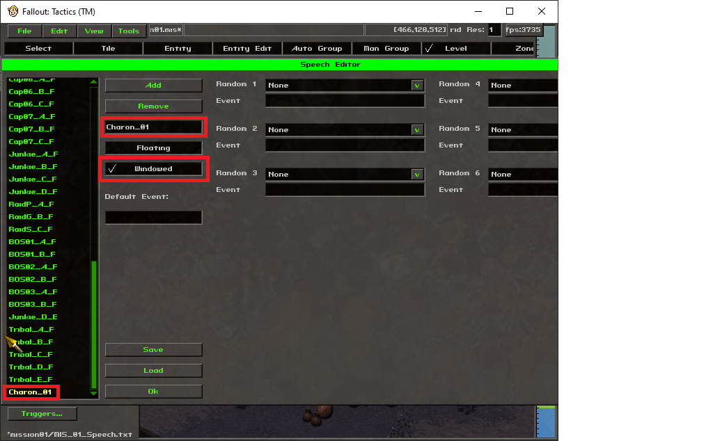
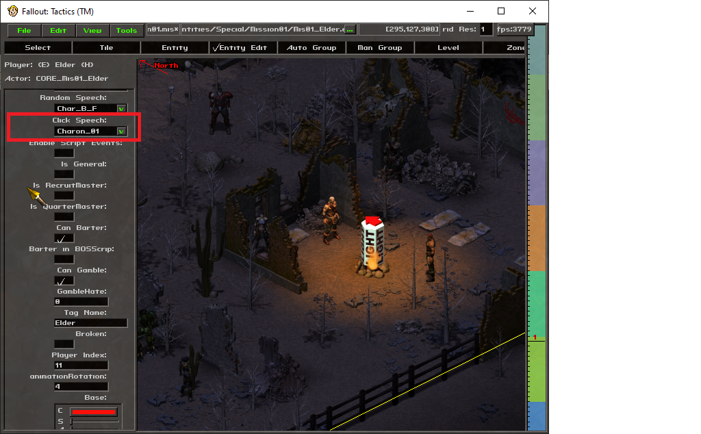

Interactive Dialogue
The Dialogue module in FTSE 0.60a provides the ability to create actual interactive dialogue for the player, using a modified version of the normal WSpeech window. A modification can define a dialogue tree for a specific character, and the module will handle movement through the tree as options are selected. The module will then give the window updates to FTSE to pass through to the game UI.
NPC character conversations are defined using a Lua table. The table contains a named definition for each node - the name is used in selecting which node should come next from a user choice, and the contents of the node are a subtable with specific fields indicating the text to display, optional audio files or scripts, and new conversation options to present to the user.
Basic Usage
To use the capabilities of the module, the following steps need to be done:
- Include the Dialogue module, and store the returned object:
speech=require "FTSE.modules.Dialogue"
- Generate a conversation object as defined below. This is an individual Lua file with a single return statement returning a table containing the conversation nodes. A barebones conversation would look like the following:
return { start={ text="This is a basic conversation with only one node.", choices={ { node="exit", text="(Done.)", priority=1 } } } }
- Register the conversation file with the module by calling the Dialogue:LoadConversation function in ftse.lua (or a derived file). The register call includes a tag string to associate with the conversation, and a filename expressed as a module location (e.g. using '.' as directory divider):
speech:LoadConversation("Charon_01","FTSE.examples.Dialogue.charon")
- In the level editor, under the "Level" tab, select the "Speech..." button. In this window, click the "Add" button to create a new speech node, then highlight the new node (should be at the bottom of the list). In the name of the node, enter the tag string exactly as in the LoadConversation call (case must match), and make sure that the "Windowed" box is checked:

It is not necessary to have any in-game text tied to the speech node; FTSE will intercept the handling for that tag and will start the Dialogue module with the registered conversation.
- Under the "Entity Edit" tab, select the entity that will initiate the conversation, and set the "Click Speech" option to the speech node created above:

Conversation details
In all conversations, the engine starts from a required node named "start". In the above example, the start node is an example of a "text" node. The "text" field contains the NPC conversation text to display, and the "choices" field contains a Lua table/array of selections to present to the user, with each selection requiring a "text" field to show as the player character's conversation text, and a "node" field indicating which new node to jump to.
There are three special destination nodes: "exit" will end the conversation and resume the game, "barter" will end the conversation while bringing up the barter window, and "gamble" will end the conversation while bringing up the gambling window.
A second node type is the "code" node; this will contain a single "code" field containing Lua code to run when the node is reached. This can be used for conditionally jumping to nodes based on game conditions, or for executing script code to e.g. give or take items to/from the player, or otherwise manipulate the game state.
There are further advanced options that are described in the documentation for the Dialogue module. These include nested conversations, audio file handling, and conditional choices based on stat checks or other criteria.